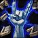
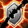
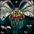
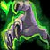
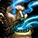
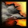
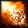
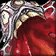
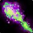

WoW Forever · Gebrechen (Affliction) · Klassenguide by LarryL
v0.19.0: Vollständiger Klassenguide im gewohnten Design: Talentbäume, runder Levelregler, Levelplan, Skills, Rotationen und Gear. Die Level-60-Talentroute ist eine Empfehlung und nach dem Launch am Live-Talentrechner abzugleichen.
v0.19.2 · Geändert: Talent-Tooltips bei allen 9 Klassen: Hover/Tippen/Tastatur, Wirkung nach aktuellem Rang, nächster Rang und geprüfte Forever-Client-Daten (Build 1.60.1.70755).
Übersicht
Datengrundlage: Wowhead Forever und die letzten Forever-Klassenänderungen. Stand: 03.11.2026
Affliction/ Gebrechen ist einer der angenehmsten Solo-Builds, weil dein Dämon tankt und DoTs Schaden verursachen, während du dich bewegst. Aderlass und Lebensentzug gleichen Mana und Leben aus.
SpielweiseFernkampf-DoT · Dämon · Kontrollzauber Kaum Downtime mit DoTs, Dämon und Lebensentzug
Beste KombiSchneiderei + Verzauberkunst; Kräuterkunde als Alternative für Gold.
TalentrouteGebrechen → Zerstörung 1 Punkt ab Stufe 10, 51 auf 60.
Rassenempfehlung für Gebrechen-Hexenmeister: Gnom (Allianz) · Ork (Horde). Die Begründungen, Volksfähigkeiten und weitere Optionen findest du im neuen Rassen-Reiter.
Stärken
1. Vorteil
Wenig Pausen durch Aderlass und Lebensentzug
2. Vorteil
Dämon kann Gegner binden und Pulls stabilisieren
3. Vorteil
DoTs ermöglichen zwei Gegner parallel mit Furcht zu kontrollieren
Worauf du achten solltest
Fear kann weitere Gruppen anziehen
Zu viele DoTs auf schwachen Mobs kosten Zeit/Mana
Dämonenmanagement erfordert Aufmerksamkeit
Empfohlene Rassen – Gebrechen-Hexenmeister
Was ist in WoW Forever sinnvoll? Die Empfehlungen sind nach Klasse, Leveln, PvE und PvP gewichtet. Eine einzelne Rasse ist nicht in jeder Spielsituation die beste. Die Volksfähigkeiten wurden in Forever stark überarbeitet – alte Classic-Listen mit Waffenfertigkeit oder klassischem „+5 % Intelligenz“ sind nicht mehr zuverlässig. Stand: 04.11.2026.
Allianz
Empfehlung zuerst, danach starke Alternativen für andere Spielweisen.
GNGnomEmpfehlung · DoT/Solo
Volksfähigkeiten: Heureka!: situativ mehr Zauberschaden bei reduzierten Kosten; Erweiterter Geist: mehr maximales Mana.
Warum? Gute Manabasis für Flüche, DoTs und Aderlass-Rotation. Entfesselungskünstler hilft beim Abstandhalten.
Warum? Interessant für schnelle Castphasen; durch die zusätzliche Heilung seltener zum Trinken gezwungen.
Alle spielbaren Rassen dieser Klasse: Allianz: Mensch, Gnom. Horde: Ork, Untoter, Troll.
Skyborne/Himmelsgeborene sind eine gesondert freizuschaltende Rasse. Die beiden Fraktionen haben unterschiedliche Klassenkombinationen und teils unterschiedliche Fähigkeiten.
Empfohlener Leveling-Pfad: Improved Corruption früh, dämonische Synergien ab 20 und ab 30 stärker auf Drain-Life-Spielweise setzen. Für Raid-DPS ist später ein Shadow-Mastery/Ruin-Build zu prüfen. Der Plan zeigt deine Punkte pro Stufe. Zum finalen Nachskillen gelten immer die aktuellen Talente im Live-Client.
Stufe60
Deine Talente auf Stufe 60
51 / 51 Talentpunkte vergeben
Talente ansehen: Mit der Maus über ein Talent fahren oder auf dem Handy antippen. Du siehst den Effekt des aktuellen Rangs und – wenn vorhanden – des nächsten Rangs. Die exakten Client-Beschreibungen werden in Originalsprache (Englisch) angezeigt. Datenquelle.
Alle drei Talentbäume – ungeskillte Talente sichtbar
Gebrechen0 Punkte
0 P.
Verbesserte Verderbnis
0/5

Unterdrückung
0/5
Verbesserter Aderlass
0/2
5 P.

Verbesserte Pein
0/2

Fluch verstärken
0/1
Einbruch der Nacht
0/2
10 P.

Teufelskonzentration
0/3
Schattenumschlingung
0/5
Schattenbeherrschung
0/5
15 P.
Pandemie
0/3

Zermürben
0/1
Lebensentzug
0/1
Dämonologie0 Punkte
0 P.
Verbesserter Gesundheitsstein
0/2
Dämonische Umarmung
0/5
Teufelsintelligenz
0/3
5 P.
Meisterbeschwörer
0/2
Dämonische Opferung
0/1
Seelenverbindung
0/1
Zerstörung0 Punkte
0 P.
Verderben
0/5
Verbesserter Schattenblitz
0/5

Katastrophe
0/3
5 P.
Verwüstung
0/5
Ruin
0/5
Schattenbrand
0/1
10 P.

Feuersbrunst
0/1
Talentpunkte pro Stufe
Stufe
Talent
Baum
10
Verbesserte Verderbnis 1/5
Gebrechen
11
Verbesserte Verderbnis 2/5
Gebrechen
12
Verbesserte Verderbnis 3/5
Gebrechen
13
Verbesserte Verderbnis 4/5
Gebrechen
14
Verbesserte Verderbnis 5/5
Gebrechen
15
Unterdrückung 1/5
Gebrechen
16
Unterdrückung 2/5
Gebrechen
17
Unterdrückung 3/5
Gebrechen
18
Unterdrückung 4/5
Gebrechen
19
Verbesserter Aderlass 1/2
Gebrechen
20
Verbesserter Aderlass 2/2
Gebrechen
21
Verbesserte Pein 1/2
Gebrechen
22
Verbesserte Pein 2/2
Gebrechen
23
Fluch verstärken 1/1
Gebrechen
24
Einbruch der Nacht 1/2
Gebrechen
25
Einbruch der Nacht 2/2
Gebrechen
26
Teufelskonzentration 1/3
Gebrechen
27
Teufelskonzentration 2/3
Gebrechen
28
Teufelskonzentration 3/3
Gebrechen
29
Schattenumschlingung 1/5
Gebrechen
30
Schattenumschlingung 2/5
Gebrechen
31
Schattenumschlingung 3/5
Gebrechen
32
Schattenumschlingung 4/5
Gebrechen
33
Schattenumschlingung 5/5
Gebrechen
34
Schattenbeherrschung 1/5
Gebrechen
35
Schattenbeherrschung 2/5
Gebrechen
36
Schattenbeherrschung 3/5
Gebrechen
37
Schattenbeherrschung 4/5
Gebrechen
38
Schattenbeherrschung 5/5
Gebrechen
39
Pandemie 1/3
Gebrechen
40
Pandemie 2/3
Gebrechen
41
Verderben 1/5
Zerstörung
42
Verderben 2/5
Zerstörung
43
Verderben 3/5
Zerstörung
44
Verderben 4/5
Zerstörung
45
Verderben 5/5
Zerstörung
46
Verbesserter Schattenblitz 1/5
Zerstörung
47
Verbesserter Schattenblitz 2/5
Zerstörung
48
Verbesserter Schattenblitz 3/5
Zerstörung
49
Verbesserter Schattenblitz 4/5
Zerstörung
50
Verbesserter Schattenblitz 5/5
Zerstörung
51
Katastrophe 1/3
Zerstörung
52
Katastrophe 2/3
Zerstörung
53
Katastrophe 3/3
Zerstörung
54
Verwüstung 1/5
Zerstörung
55
Verwüstung 2/5
Zerstörung
56
Verwüstung 3/5
Zerstörung
57
Verwüstung 4/5
Zerstörung
58
Verwüstung 5/5
Zerstörung
59
Ruin 1/5
Zerstörung
60
Ruin 2/5
Zerstörung
Wichtige Skills
FeuerbrandAb ca. Stufe 1 · DoT früh nutzen

VerderbnisAb ca. Stufe 4 · Wichtigster Gebrechen-DoT
AderlassAb ca. Stufe 6 · Leben gegen Mana tauschen
FurchtAb ca. Stufe 8 · Kontrolle
Leerenwandler beschwörenAb ca. Stufe 10 · Solo-Tankpet
Omen der PeinAb ca. Stufe 10 · Zweiter Schadensfluch/Bane
LebensentzugAb ca. Stufe 30 · Sustain, falls verfügbar

SchattenblitzAb ca. Stufe 1 · Füllzauber für SM/Ruin
SeelensteinAb ca. Stufe 18 · Wiederbelebungsutility
ZermürbenAb ca. Stufe 40 · Gebrechen-Talentkanal, falls gewählt
Einige Forever-Builddaten sind noch im Wandel. Talentplatzierungen und Erlernstufen im Spiel haben Vorrang, wenn ein November-Hotfix den Baum verändert.
Exakte Gegenstandswerte sind lokal noch nicht verifiziert. Über den Wowhead-Link findest du den aktuellen Forever-Tooltip, bevor du das Item craftest oder farmst.
Exakte Gegenstandswerte sind lokal noch nicht verifiziert. Über den Wowhead-Link findest du den aktuellen Forever-Tooltip, bevor du das Item craftest oder farmst.